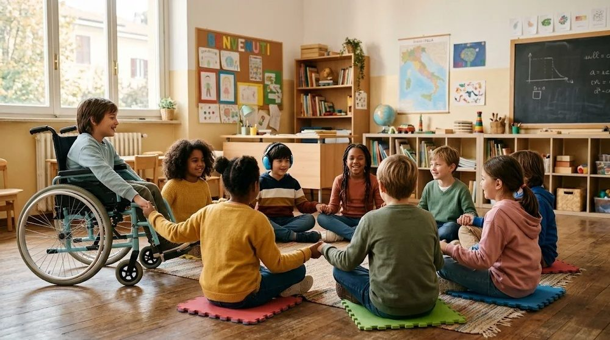
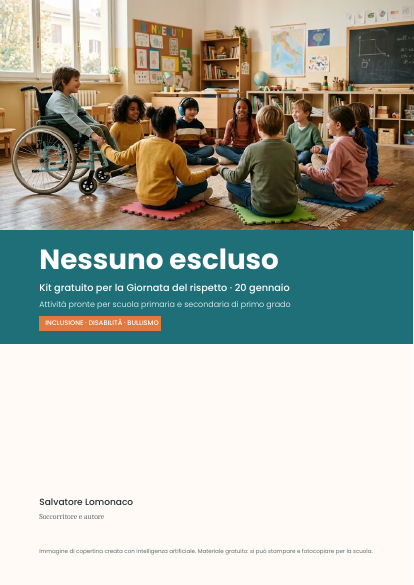

Nessuno escluso
Un kit gratuito con attività pronte per la Giornata del rispetto del 20 gennaio: inclusione dei compagni con autismo e disabilità, prevenzione del bullismo e del cyberbullismo.
Scarica il kit gratuito (PDF) Cosa contiene12 pagine · si può stampare e fotocopiare liberamente per uso scolastico

Quattro attività da 50 minuti, già pronte
Si aprono e si usano il giorno stesso: obiettivo, materiale e passi minuto per minuto, con attenzioni per gli alunni con disabilità.
Il cerchio dei talenti
Una ragnatela di lana unisce la classe: ognuno scopre il talento di un compagno.
La nostra classe accogliente
I bambini scelgono insieme 5 regole che fanno stare bene tutti, anche chi sente i rumori più forti.
Non sono solo uno spettatore
Tre storie e quattro mosse concrete per chi assiste a un episodio di bullismo.
Online conta uguale
Cyberbullismo: vero o falso, una chat da riscrivere e le regole del gruppo classe.

E in più
- Il patto della classe da firmare insieme, alunni e insegnanti
- “Se succede a te o a un compagno”: la scheda da appendere, con i numeri gratuiti di aiuto
- Per i docenti: i segnali di possibile bullismo e i primi passi da seguire
- 8 attenzioni con un alunno autistico in classe
- Il poster con le 5 regole di “Nessuno escluso”
I libri del progetto
Per chi vuole andare oltre la giornata del 20 gennaio e lavorare tutto l’anno.
Nessuno escluso – Guida per insegnanti
Autismo e disabilità in classe, prevenzione e gestione del bullismo, attività per primaria e secondaria di I grado, modelli e schede pronte.
Nessuno escluso – Guida per famiglie
Come collaborare con la scuola, riconoscere i segnali di bullismo e aiutare i propri figli, con attenzione ai bambini con autismo e disabilità.
Vuoi sapere quando escono? Scrivi a salvatorelomonaco412@gmail.com
Chi c’è dietro
Salvatore Lomonaco è soccorritore e scrittore. Nei suoi libri racconta storie vere di fragilità e di coraggio, come “Il bambino che non voleva nessuno” e “Il coraggio di esistere”, dedicati alla disabilità e alla dignità di ogni persona. Da questa esperienza nasce “Nessuno escluso”: perché spesso il bambino più esposto al bullismo è quello che la classe non ha ancora imparato a conoscere.